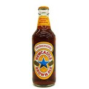

＜賞味期限2018年9月30日までの為、特価品！＞【送料無料！】【ケース販売】 ビール ニューキャッスル ブラウンエール （330ml×24本） beer
＊この商品は【ケース販売】です。 ケースの場合のみ1個分の送料が無料となります。 別途、バラ販売もございますので、併せてご検討願います。 ニューキャッスル ブラウンエール 4.7％ / 330ml ■イギリスのニューキャッスルで造られる、ブラウン エールの代表的銘柄で、黄色に青い星のマークが目印。 サッカーのプレミアリーグで活躍するニューキャッスル・ ユナイテッドの公式スポンサーとしても知られています。 英国で苦味と爽快さが特徴のペールエールが流行した 頃に、ペールエールに対抗するべく造られたのが、誕生の きっかけというだけあって、特徴は苦味の少ない、 滑らかでマイルドな口当たりと、甘く優雅に広がる コク、そして芳ばしいナッツの風味です。 大麦麦芽の他に、小麦も仕様しており、甘味料、 カラメルと副原料も多いながら、そのバランスは秀逸で、しっかりとした目的意識を持った製品生産の方向性が 窺うことが出来ます。 飲み疲れしない、英国で最もポピュラーな ブラウンエールです。 ※透明な瓶にボトリングされているので、冷蔵庫など、 直射日光の当たらない場所に保管して下さい。